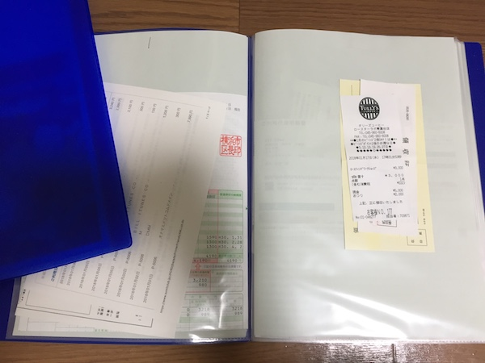
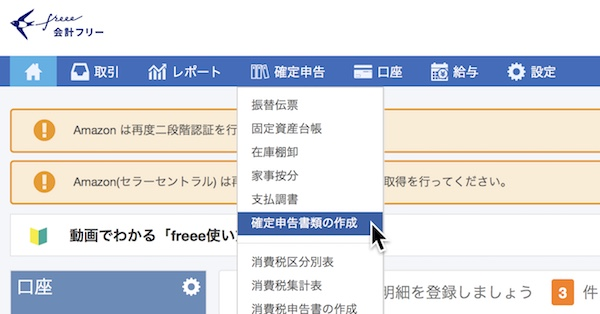
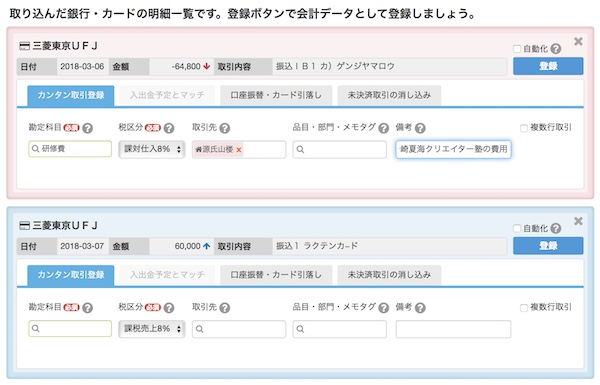
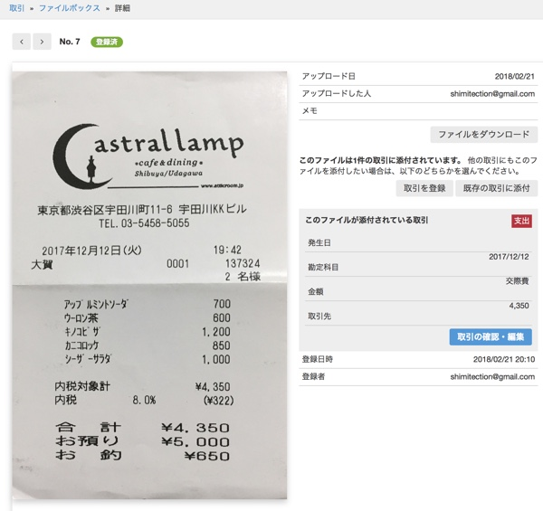

| アフィリエイトの確定申告「超」入門 | |
| 清水 Air | |
| Shimizu Shuppan (2018) | |
こんにちは、専業アフィリエイターの清水Airと申します。アフィリエイトに取り組んでから、現時点で１年と４ヶ月、まだまだ駆け出しではありますが、つい数日前、初めての確定申告をしてきました。それも、青色申告で！ やる前は「難しそう」「自分にできるのか」など不安でいっぱいでしたが、なんとかなりました。いやー、よかったよかった。自分で自分を褒めてやりたい気分です。
そこで、本書では新米のアフィリエイターの方、あるいはこれからアフィリエイトをはじめる予定という方のために、当事者目線で確定申告のことを解説したいと思います。
私は税理士ではありませんし、まだ一回しか確定申告をしていないど素人ではあるのですが、だからこそ、右も左もわからないという方の視点に立てるはず。下手に詳しくないから、素人の方にとってわかりやすく説明できるはず。そう思い、本書を書いてみようと思いました。
「白色申告と青色申告って何が違うの？」
「アフィリエイトって何が経費になるの？」
「儲けが少ないならしなくていいとか聞いたけど？」
「そもそも確定申告ってなに？」
これまで会社員、フリーターなど、給与所得しかなかった場合、確定申告についてはまるっきりわからない。すべてが藪の中。何がわからないかもわからない。――と、そんな方も多いはず。そこで、本当に基礎の基礎から、まさに「超」入門としてアフィリエイターの確定申告について解説します。なかなか「アフィリエイトの確定申告」という狭いテーマの書籍はないので、きっとお役に立てるはず。
さて、アフィリエイトというのは覚えることが多くて大変ですよね。ASPに登録したり、ドメイン取得したり、サーバーを借りたり、ワードプレスの使い方を覚えたり、さらにはSEO対策だのコピーライティングだのも勉強しなくちゃいけない。それでも初報酬がなかなか出ない。で、ようやく収益が発生するようになったら、今度は確定申告です。「もうイヤッ！ そんなのやりたくないもんっ！ 助けてお母さーん！」。こう叫んで泣きじゃくるのも無理はありません。
けれど、納税は国民の義務のひとつ。もしこれを怠れば、税務署がだまっていません。「あなた脱税してますね？」「ちゃんと税金を払いなさい」と詰めよられ、にじりよられ、本来より高い税金を取られてしまうなんてこともあるのです。なので、ちゃんと確定申告をして、税金を払った方がいい。脱税、ダメ絶対！
というわけで、アフィリエイトで収益が発生してきたら、確定申告のこと、税金のこともきちんと調べておきましょう。きっちり帳簿をつけて、公明正大に納税をしていれば、それが精神
の安定にもつながるはずですから。
では、本書の構成を簡単に説明しておきます。
第１章【超・基礎知識編】では、その名の通り、確定申告についてのもっとも基本的なことを説明しています。そもそも確定申告って何なの？ やる必要あるの？ 収入の所得の違いって何？ こんな素朴な疑問に、ど素人の目線でこたえていきます。
第２章【会計ソフトで帳簿をつけよう】では、具体的な日々の帳簿付けについて解説します。私はfreeeという会計ソフトを使っていますので、主にこのソフトの仕様に準拠して解説します。とはいえ、アフィリエイトでよく使う「勘定科目」であったり「家事按分」の考え方だったり、一般的な知識も多く含んでいます。
第３章【いざ確定申告へ】では、１年分の帳簿ができたとして、最後の調整と確定申告書の作成について説明します。青色申告の場合に必要となる決算書についてだとか、さまざまな必要書類、それから具体的な書類の提出方法などをご案内します。まだ未経験の方にも、確定申告をするイメージが伝わるように書いたつもりです。
最後の第４章【まだまだ気になる確定申告】は、ここまでの章で解説できなかったことをテーマごとにまとめています。レシートや領収書を紛失してしまった場合の対処法、あるいは「節税」と「脱税」の境界線、こまった場合の相談先のご紹介などを紹介しています。
何にせよ、ぶっちゃけ私自身は税のことにそこまで詳しいわけではありません。だから、細かいことは割愛しています。本書は「これ一冊で全部わかる」といったタイプの本ではないんです。でも、まるっきり知識ゼロの状態の方が、確定申告の初歩、あるいは全体の概要を掴めるように努力したつもりです。
では、この先アフィリエイトの作業に専念するために、確定申告について学んでいきましょう。一度わかってしまえば、確定申告は怖くありません！
私がアフィリエイトをはじめたのは2016年の10月でした。初月の報酬はゼロ、翌月は1800円、その次はたしか3600円くらい。ちょっとずつ、報酬が出るようになっていきました。
2016年はトータルの発生報酬額が5000円ほど、確定ではほぼゼロでしたから、確定申告のことなど考えていませんでした。なので、2017年の２月３月も、税金のことに関してはほぼ意識することもなく、のほほんと作業だけ継続しておりました。
が、その年の５月か６月に１ヶ月の発生金額が１０万円を超え、さらに秋になると確定でも２０万円ほど銀行口座に入ってくるようになりました。
「うひょひょひょっ！ アフィリエイトで稼げるようになったぞ！」
なんて思いで、小躍りして喜んでいたものです。コンビニのアルバイトもやめて、一人暮らしを考えるようになりました。
けれども、スーモでしゃれたワンルームの情報を調べつつ、心の片隅にはこんな疑問と不安が......。
「この調子だと、来年は確定申告が必要なんじゃないか？」
この時点では、私は確定申告のことは何も知りません。なんとなく知っていたのは、「個人で稼いでいる人がやる税金関係のこと」という程度の漠然としたイメージ。自分もしなくてはいけないのか？ 具体的にどうやってやるのか？ そんなことは何も知りませんでした。まさに五里霧中です。
そうして、「知らなきゃいけないんだよなー」という意識はありつつも、ほぼ勉強することもなく、とりたてて準備をすることもなく、2018年を迎えました。で、１月だったでしょうか、税務署から確定申告のための書類一式が封筒で届いたのです。
さすがにここに至っては調べざるをえません。2016年は5000円ほどの発生だったけど、2017年は100万円以上のアフィリエイト収入を得ている。となると、さすがにしらばっくれるわけにもいかなそう。
というわけで、私の確定申告との戦いが始まったのでした。
はて、そもそもこんな疑問をお持ちの方もいらっしゃるでしょう。
「アフィリエイトなんて所詮はお小遣い稼ぎでしょう。わざわざ確定申告なんてする必要があるの？」
「確定申告をすると税金を取られちゃうんでしょ？ だったらめんどくさいし、やりたくないよ」
副業とか、お小遣い稼ぎという感覚の方であれば、こんな捉え方もあるかもしれませんね。個人でひっそりやってることだし、役所には何も通知してないし、黙ってれば別にいいんじゃないの、と。
しかし、所得の金額によってはアフィリエイトでも確定申告は必要です
。
具体的に言いますと、専業でやってる場合は３８万円以上
、会社員・フリーターなど副業でやってる場合は２０万円以上
のアフィリエイト所得がある――この場合には確定申告をする必要があります。
副業であっても毎月５万円くらい報酬があれば、年間で６０万円ほどになる。経費としては月に１万円くらいしかかかってないとすると、確実に申告の必要があります。専業でやってて、１年間の儲けはたったの８０万円。実家に住んでるからギリギリ何とかなってる。こんな場合でも、申告は必要なのですね。
逆に、もしまだ１ヶ月の報酬が１万円程度。年間でも２０万円以下という方であれば、確定申告は必要ありません。あるいは、収入が４０万円あったとしても、仮に経費として３０万円使っていれば所得としてはたったの１０万円。この場合にも、確定申告は必要ありません（収入と所得の違いは後ほど）。
というわけで、イメージとしては、「初報酬が出てしばらく経って、少し稼げるようになってきたかな」という段階で確定申告が必要になってくるのです。
「副業なら年間の儲けが２０万円から......。でも、そこまで報酬が出るかどうかなんてまだわからないよ」
こんな声も聞こえてきそうですね。いま現在、まだアフィリエイトをはじめたばかり、報酬は月にゼロから数千円。とすると、年末までにどのくらい報酬が出るかなんてわからない。２０万円以下で済むかもしれないし、超えるかもしれない。こんなケースだと、しっかり帳簿をつけようという気にはならないはず。私もそうだったので、気持ちはよくわかります。
とはいえ、まったく何の準備もしないのは危険！ もし収入が増えてきた場合、何の準備もしていないと払わなくていい税金まで取られてしまい、損をするかもしれません。
そこで、新米アフィリエイターの方に、３つだけ、ほんのちょっと先輩の私からアドバイスをいたします。これだけやっておいてください。
これだけやっておけば、あとはどうにでもなります。
もう少し詳しく言いますと、まずアフィリエイトに関連する買い物や支払いをした場合、そのレシート（または領収書）を保存しておくこと。雑でもなんでも構いません。適当な棚か、あるいは封筒でもなんでも、一箇所ここと決めて、放り込んでおいてください。ネットで買い物をした場合はクレジットカードの明細か、いつ何を買ったかがわかるメールなどを削除せず残しておくこと。これでオーケー。あとあと、これらは経費として帳簿に書き込む（入力する）ことができます。
次に、事業用の口座をプライベートとわけておくこと。まだ儲かってない段階ではアフィリエイトが「事業」だという意識は薄いかもしれませんが、できればプライベートとは別の口座を利用した方がいい。あとあと会計ソフトを使うとき、ごっちゃになっていると処理がしにくいのです。「絶対にわけてないとダメ」ということではありませんが、別々にしてあると便利です。
それから、注意してほしいのは、銀行口座の取引履歴やクレジットカードの明細を保存しておくこと。普段から通帳記帳をちゃんとやってて、クレジットカードの明細もファイルして残してる――そんな几帳面な方は何の問題もありません。が、「紙の通帳なんかどこ行ったかわからねぇし、明細も来たその場で破り捨ててるぜ」という豪放磊落
な方はご注意を。金融機関の中には、あとあと２、３ヶ月分くらいしかオンラインで明細を遡れないところがあるんです（ゆうちょとかね）。なので、過去の取引情報が闇の中に葬られないよう、そういった情報は残しておくようにしましょう。
もう一度言いますが、この３点さえ守っておけば、いざ確定申告が必要となったときにどうにでもなります。ぜひ、意識しておいてください。
はて、そもそも確定申告ってなんだ？ そこからわからないという方もいらっしゃるはず。なるべく噛み砕いて言うと、こういうことです。
去年１年間の所得（儲けたお金）の金額を確定させて、税金を払うこと。
特に難しいことはありませんね。日本人には納税の義務があります。お金を儲けたら、その一部を政府や地方自治体に税金として納めなくてはいけない。そのために自分の儲けたお金について調べ、金額を確定し、税金をお支払いするのが確定申告です。そうやって払ったお金で道路ができ、公立学校が運営され、警察官が街の平和を守ってくれるというわけですね。
ただし、これを始めて知った方が違和感を覚えるのは「支払うお金を自分で申告する」という部分でしょう。普通に生きていると、年金でも公共料金でもスマホ料金でも、なんだってあちら側から「〇〇円を支払ってください」と言ってくるものです。で、言われた通りに払う。NHKの受信料だって、あちらから徴収しにやってきます。
けれど、確定申告はあくまで自発的に、こちら側からやるものです。黙って待っていてはいけないのです。
では、具体的に確定申告というのはいつ、どんな形で行えばいいのでしょうか。
時期としては、毎年２月１５日から３月１５日あたりの１ヶ月間
となっています。曜日の関係で３月１６日までとか、多少ずれたりはしますが、基本はこの１ヶ月間と決まっています。申告をするのは、この前年の１月１日から１２月３１日までの所得です。
普段からちゃんと帳簿（事業に関する入出金の記録）をつけておけば、あとは確定申告書を作成するのはそうたいへんなことではありません。あとでご紹介するfreeeなどの会計ソフトを使って確定申告書や決算書を作り、あとは必要な書類をいくつか添えて、管轄の税務署に提出することとなります。
ちなみに、提出は税務署まで持参してもいいですし、郵送でもオーケー。さらにはe-Taxというものを使い、オンラインで出すこともできます。これらについては後で述べます。
とにかく、ここではざっくりした流れだけ把握しておきましょう。
まず、売上や経費をちゃんと帳簿につけておいて、それを確定申告の時期にまとめる。提出用の書類を作る。あとはそれを期限内に税務署に提出する。所得税を払う。こういうステップとなります。
これは初心者の方にとって気になる疑問トップ３に入るものではないでしょうか。つまり、白色 申告と青色 申告で何が違うのか？ どっちがいいのか？ まずはざっくり説明しますと......
というわけで、要は「簡単なの」と「ちょっと難しいやつ」というわけですね。
じゃあ、このメリットというのが何かと言いますと、もっとも大きいのは「控除」です。これ、コウジョと読みます。何かというと、所得から一定の額を引くことができるのです。
青色申告の場合、簡易な簿記であれば１０万円の控除、複式簿記
というやや難しい簿記をつければ６５万円の控除を受けることができる。
ここが最大の違いとなります。複式簿記というものできっちり帳簿をつけて、青色申告決算書というものを作成して提出すれば、課税される所得をぐぐっと抑えてくれるのです。これはがんばってやるしかない！
なお、青色申告を選ぶと他にもいろんな特典があります。赤字を繰り越したりとか、家族を雇ったときにその給与を経費にできるとか。でも、アフィリエイターの場合に関係してくるのはほぼこの６５万円の控除のみでしょう。けど、これだけでもがんばる価値はある。
私は最初からこの青色申告、しかも複式簿記での申告を選びました。なんとなくハードルが高そうに思えますが、会計ソフトを使えば恐るるに足りません。ぜひ、６５万円の控除を狙って、複式簿記での青色申告に挑戦してみてください。
ちなみに、なぜそんな大きなメリットが得られるのかといえば、これは税務署からのちょっとしたご褒美です。「がんばって詳細な申告をしてくれたから、そのお返しとして税金を安くしてあげるよ」というわけ。
税務署としては、なるべくしっかりした帳簿をつけてもらって決算書を提出してもらった方が、納税者のことを把握しやすい。なので、ちゃんと労力をかけて青色申告してくれた方には特典を与えているというわけです。
白色申告はだれでもできますが、青色申告をするためにはちょっとした条件があります。それが、開業届と青色申告承認申請書を事前に提出しておくこと。
おや、まだどちらも提出していませんか？ でも、怖がる必要はありません。これらの提出は住民票を取るより簡単です。
開業届は、開業から１ヶ月以内に提出すること。青色申告承認申請書も同時に出しておきましょう。
「アフィリエイトの開業っていつなの？ よくわかんないんだけど」
でも大丈夫。開業届は、自分で「開業したぞ」と思ったときに出せばオーケー。アフィリエイトをはじめたそのときでもいいですし、ちょっと報酬がで始めたというときでもいい。もし提出が遅くなったとしても、罰則等はありません。
アフィリエイトでの開業の場合、「事業の種類」にどう書くかを迷うかもしれませんが、たとえば私はこう書きました。
「Webサイト運営、インターネットビジネス、及びそれに付随する業務」
これなら、ASPやアドセンスの報酬だけでなく、将来的に電子書籍や個人コンサルで稼いだ場合も、ここに含まれることになります。まあ、そんなに厳密に考えずともいいみたいですけどね。
あと、屋号は空欄のままにしておきました。最初は「清水クリエイションズにしようかな」とか「やっぱAir Webかな」とかいろいろ考えていましたが、個人事業主なら屋号は必要ない
と知り、そのままにしておきました。商店としてやるわけでもなし、屋号を名乗る機会もないわけなので、アフィリエイターならほぼ屋号は不要でしょう。
他にこまごまとした記入欄がありますが、これらも別に難しくない。
「青色申告承認申請書」又は「青色申告の取りやめ届出書」は「有」にチェック。「消費税に関する「課税事業者選択届出書」又は「事業廃止届出書」」は「無」にチェックを入れること。
青色申告承認申請書もさほど難しくありません。所得の種類は「事業所得」、簿記方式は先ほど書いたように６５万円控除を狙って「複式簿記」がおすすめ（１０万円控除でいいなら「簡易簿記」）。ちょっと迷うのが備付帳簿名というところですが、ここは以下の４つに丸をつけておきましょう。
* 現金出納帳
* 預金出納帳
* 総勘定元帳
* 仕訳帳
これでオーケー。
余談ですが、たった今、私は確定申告のときこれら４つの帳簿を提出していないことに気づきました。わあ、大変！ 申請書で「備付帳簿」としてチェックを入れたのに、出し忘れちゃった。
でも、大丈夫。このときにチェックを入れた帳簿というのはあくまで「提出予定」であり、必ず出さなくてはいけないということではありません。むしろ、必要な決算書のたぐいは全部出しているので、問題なし。そう神経質に考えることはないのです。
この２つの書類は、必ず税務署に提出しましょう。税務署に行けば用紙がありますので、自分のマイナンバーを把握し、あとは印鑑さえ持参すれば、その場で書いて出すことができます。わざわざ用意して行くまでもない。
また、地域によっては税務署だけでなく市区町村の役所にも提出する必要があるらしいので、そのあたりは税務署か役所の税務課に電話して聞いておいてください（この手の地域ごとの情報というのはネットで検索しても出てこないので、電話した方がはやいです）。
ここで質問です。あなたは「収入」と「所得」の違いを説明できますか？
「えっとねぇ、字が違う」
そんな小学生みたいなことを言ってはいけません。意味の違いです。日常会話ではほぼ同じように使っていますが、こと確定申告に関してはこの違いは重要です。
簡単に言いますと、「収入」は入ってきたお金全部のことで、「所得」はそこから経費を引いた、いわゆる儲けのこと。つまり、こういうことです。
所得＝収入－ 経費
たとえば、１年間に８００万円が入って来たとしましょう。でも、なんだかんだで２００万円の経費がかかったとする。と、所得はいくらになるでしょうか？ これは小学生でもわかりますね。６００万円です。式はこうなります。
６００万円＝８００万円－ ２００万円
なぜ収入と所得の違いが大事かと言いますと、所得税というのはその名の通り、所得に課税されるからです。所得税は○パーセントというかたちでかかってきますので、所得が８００万か６００万かでは支払う額が大違い。しかも、他の税金もこの金額が基準となって算出されるので、さらに重大な違いとなってくるわけなのです。
この単純な式がわかれば、確定申告とか税金について、ちょっと見えてくるものがあるでしょう。
所得税は所得にかかる。だったら、収入は少なく、経費は大きい方が、所得は小さくなります。つまり、払わなきゃいけない税金が安くなる。
「ハハ～ン。税金を安くしたいなら、収入はなるべく低く、経費はなるべく高くした方がいいわけだな」
そういうことです。納税者の基本スタンスはそれ。なるべく収入は低く、経費は多く見積もりたい
、というわけですね。
とはいえ、収入というのは事業によって入ってくるお金すべてを申告しなければならないので、どうすることもできません。これを誤魔化したら脱税です。けど、経費の方はいろいろ工夫することができる。もちろん嘘はダメですが、仕事に関係する出費なら、なるべく経費にした方がいい。
具体的なことはあとあと書いていきますが、とりあえず、「所得は収入から経費を引いたもの」という基本だけは抑えておきましょう。
「ほんで、経費 ってなんやねん？」
おっと、少し説明不足でしたね。経費というのは、事業のために必要となった出費のことを言います。アフィリエイトであれば、ドメイン代やサーバー代、シリウスなどのソフトの代金、パソコンの購入費用や事務用品、セミナーやコンサルの費用やそういったものに参加するための交通費も経費になります。さらには同業者やASP担当者との打ち合わせで払った飲食費も経費です。
これまでの人生で「経費で落ちる」という言葉を聞いたことはないでしょうか。これはつまり、何かの出費が経費として申告できる、ということです。もし「経費で落ち」れば、そのぶん所得が減らせるわけなので、税金が安くなるんですね。
私は長いあいだ、なぜレシートや領収書というものが存在するのか不思議でした。あんなものをいちいち渡す必要があるのかと思いつつ、コンビニでバイトをしておりました。けど、経費とするためにはレシートか領収書が必要なので、やっぱり渡さないと相手がこまってしまうのですね。
もう一度確認しますと、経費とは事業に必要な出費のことです。ただし、これをどのくらいの範囲に捉えるかはなかなか難しいところ。ASP担当者との打ち合わせでコーヒーを飲んだらこれは完全に経費でしょうが、友達のように中がいい他のアフィリエイターと高級焼肉を食べに行き、アフィリと関係ない話ばかりして盛り上がっただけだったら？ それは、なかなか「事業に必要な出費」とは言いづらいでしょう。
このあたりは各々の判断にかかってきます。
なお、「事業にも必要だけど、プライベートな面もあるんだよなぁ」ということも、個人事業主なら日常茶飯事。この場合は「家事按分」ということを行います。これについては第２章で。
経費をなるべく多くすれば、課税される額が減る。これと似たようなものに、控除 というものがあります。青色申告の６５万円控除もそうですし、他にもこのようなものが。
他にもありますが、代表的なのはこれくらい。
だれでも受けられるのが、最初の基礎控除。何の条件もなく、３８万円控除されるんですね。
「ってことは、青色申告で６５万円控除を受ければ、基礎控除と合わせて１０３万円も控除されるの？」
その通り。鋭いですね。青色申告の複式簿記をやれば、なんとそれだけで１０３万円の控除になる
んです。そもそも収入が少ない場合は、これだけでもう、所得税ゼロになってしまいそうです。
はい、重要なところに来ました。レシートと領収書の保管についてです。
私は確定申告について調べる前、経費となった支出のレシートとか領収書はすべてコピーを取るなどして税務署に提出しなければいけないと思っていました。こう思っている人、けっこう多いのではないでしょうか。でも、違います。
レシートと領収書は、ただ自宅で保管しておけばいいのです！
確定申告のとき、コピーを添付する必要はありませんし、見せる必要すらありません。いざというときのため、家に置いておけばいい。
なお、保管を義務付けられているのは７年間です。なかなか長いですね。確定申告が終わったからといって捨ててしまわないように注意しましょう。
保管方法ですが、私はファイルを購入し、月ごとに入れておくことにしました。見開きの左側にクレジットカードの明細と未入力のレシート・領収書。で、会計ソフトに入力したものは右側に移す。これで完璧。いちいち台紙に糊付けする必要はありません。ぶっちゃけ、１年分をがさっと一枚の茶封筒に入れておいても、そう困ることはないでしょう。

あと、「レシートと領収書、どっちがいい？」という問題ですが、結論を言えばレシートです
。レシートには日付・買ったもの・金額などがもれなく機械で印字されていますから、信頼性が高いのです。プロの税理士さんもはっきりそう言っていたので間違いない。むしろ、レシートが出せる店で支払ってるのに手書きの領収書しかないとしたら、税務署に怪しまれちゃうかもしれません。
それから、プライベートなものと経費とが同じレシートになっててもノープロブレム。それで構いません。そのまんま保存しておきましょう。
余談ですが、ときどきコンビニや百円ショップのレジで、レシートが出るのに領収書をもらっている人がいて、あれはとても不思議です。もしかしたら、「経費にするなら領収書」だと思い込んでるのかも。これは間違いですので、お気をつけください。
それから、居酒屋やレストランで割り勘をして、レシートが一枚しか出ない場合、このときは店員さんに言って、一人頭の金額を記した領収書を書いてもらいましょう。私も、アフィリエイターの仲間と飲み食いしたときはそうやって全員分の領収書をもらっています。
「こりゃあどう考えても経費じゃないよな」というプライベートなレシートは、あとあと混乱する元ですので、その都度ぽいっとゴミ箱に捨ててしまいましょう。
では、インターネットで買い物をしたとき、領収書はどうすればいいのでしょうか。
たとえばAmazonなら、購入履歴のところから領収書を表示することができ、これをプリントアウトすればオーケーです。というか、たとえ１０年前の履歴だって表示させられるわけなので、何の問題もありません。ちゃんと記録が残っていればいいので。
メルカリやヤフオクの場合は、売り手に言って、領収書を入れてもらいましょう。私も出品者となったときに領収書を求められ、オンラインのジェネレーターで作成したことがあります。
それ以外、もし領収書が手に入らない場合はどうしたらいいのか？ そのときは、何をいつ購入したのかがわかるようなメールなり確認画面を残しておけばおそらく大丈夫。
なぜ領収書やレシートが必要なのかといえば、結局のところ、「いつ、どこから、何を、いくらで買ったのか」という記録が必要だから。なので、この記録が残っていれば、それで認められる可能性が高い（断言はできません）。可能な範囲で、そういったものを残しておきましょう。
こんなウワサを聞いたことはありませんか？
「フリーランスで稼ぎが少ない場合、確定申告をするとむしろお金が返ってくる」
確定申告をすると、所得税を払うどころかむしろもらえちゃう。なんともステキなお話ですよね。自分もまだまだ収入が少ないし、もしかしたらいくらか入ってくるかも......。
けど、残念。アフィリエイターはどれだけ収入が少なくとも、お金が戻ってくるということはございません。希望を打ち砕いてしまい、申し訳ない。
そもそもなぜフリーランスで働く人にお金が戻ってくるかと言いますと、もともとの支払い報酬から税金が引かれているからなのです。源泉徴収
というやつです。渡すときに、あらかじめ税金が多めに引かれてる。だから、確定申告のときに所得が少ないと、引かれすぎた分を還付してもらえるのです。
では、アフィリエイターはどうか？ ASPから振り込まれる報酬は、まったく源泉徴収されておりません。
つまり、報酬をもらう段階では税金を１円も引かれてはいないのです。もともと払ってないんだから、戻ってきようがないわけですね。
まあ、中には源泉徴収をしているASPもあるようですが、たとえば大手のA8.net、afb、アクセストレードなどはどこもやってない。基本的に、還付というのはアフィリエイターには縁のないことです（給与所得がある方や退職金をもらった方はありえるかもしれませんが）。
そろそろ第１章も終わりとなります。次章からはもっと具体的に帳簿のつけ方について見ていくことにいたしましょう。その中にはちょいと小難しい専門用語も出てきてしまいます。
けれど、確定申告で大事になるのは結局のところ「売上」と「経費」の２つ。
これだけは押さえておいていただきたい。いくら入ってきて、事業のためにいくら使ったのか。ここだけちゃんとしておけば、他は多少いい加減でも、税務署に睨まれるなんてことはないはず。
というのも、結局のところ税務署はちゃんと取るべき税金を取るのがお仕事なのです。取りっぱぐれさえなければ、いちいち帳簿の細かいミスなどを突いてくることはないでしょう。帳簿をちゃんとつけるというのも、結局はちゃんと納税をしてもらうための手段でしかないのです、あちら側からすれば。
なので、「売上をごまかさない」と「経費を水増ししない」という２点さえ厳守すれば、他はそこまで神経質にならなくてもいいはず。確定申告は試験ではありませんから。たとえば売上の日付が年度内で１ヶ月ずれてたとしても、トータルで増減しなければ問題ありません。
ポイントだけちゃんと押さえて、あとはおおらかにやっていきましょう。
ふぅ、いきなり第１章から堅苦しい話をしすぎたかもしれません。でも、市販の書籍などよりは無駄で煩雑な部分を省いたので、だいぶわかりやすかったのではないでしょうか。自画自賛して申し訳ない。
まあ、愚痴を言うわけじゃありませんが......というか、愚痴なんですけど、市販の確定申告の本はけっこうわかりにくい。「かんたん」「やさしい」「わかりやすい」なんて書いてても、いざページを開いたらけっこう難しかったりする。確定申告の「カ」の字もわからないのに、いきなり節税のポイントとか言われても訳わかんないよって話です。そもそも「控除が何か」がわからないのに、「青色申告なら６５万円控除！」と言われても、ポカンとするだけなのです。
あと、アフィリエイトだったらほとんど無関係な話も多いですしね。赤字になんてならないし、銀行からの融資なんていらないし、在庫という概念すらないし。棚卸しの話とかいらないのですよ。
さらにさらに、確定申告が難しく感じる要因として、まわりに知ってる人がほとんどいないという事情もあるかもしれません。日本人は大多数が会社員。となると、税金関係のことはほとんど会社に丸投げしてる状態。自分で毎年確定申告をしてる人は少数派です。なかには会社員の年末調整と混同してる人もいるし、間違って理解してる人もいたりする。
去年、私がまだ確定申告についてまるで知らなかったとき、母親から「あんたは確定申告をしてないよね」と言われたことがありました。
さも「しなきゃいけないのにしてない」みたいな、脱税してるみたいなニュアンスで言われたので、私はこう答えました。
「去年の所得は全然少ないから、まだしなくていいんだよ。来年からやる」と。
けど、なんだか母は納得していない様子。
さらにしばらくしゃべっていると、母は言いました。「確定申告っていうのは、来年の収入を申告することなんだよ」と。
私はこう返しました。
「来年の収入なんてわかるわけないだろ」と。
毎年収入が一定なら予想くらいはできるでしょうが、こちとら毎月数万円ずつ月収が上がっておるのです。あるいはいきなり激減することだって全然ありうる。翌年の収入がトータルでいくらになるかなど、予測することすら難しい。そもそも「確定」申告なのに、未来の収入を申告するなんて変です。
けれども、このようにつらつらと説明しても母親は納得してない様子で、この話はうやむやになりました。
いったい何をどのように勘違いしていたのか定かではありませんが、このように曖昧に、あるいは間違って理解している人も多いのが確定申告。迂闊に他の人の話を聞いてしまうと、失敗するかもしれません。ちゃんと確実な情報をゲットするようにしたいものです。
......にしても、「確定申告は来年の収入を申告するもの」というのは何をどう勘違いしたのか、非常に気になります。今度帰省したときに聞いてみようっと。
第１章では確定申告の全般的な話、基本的なことをお伝えしました。この章ではもっと具体的に、帳簿
のつけ方についてご案内しようと思います。
けれど、帳簿と言っても紙のノートみたいなものを買ってきてそこにカリカリと手書きする必要はありません。というか、それで複式簿記をつけろと言われても私には無理。絶対、できない。おそらく、そんなことができる人はほとんどいないのではないでしょうか。
ここで登場するのが、会計ソフトです。
確定申告をする前、私は会計ソフトというものについてほとんど知らず、紙の帳簿かエクセルでやらなきゃいけないのかと思い、戦々恐々としていたものです。「ああ、そんな難しそうなこと、僕にはできそうにない」と。「エクセルなんて持ってないし、買っても怖くていじれないよ」と。そうして、お布団をかぶってガタガタと震える毎日を過ごしていました。
けれど、会計ソフトを使えば何の心配もない。銀行口座やクレジットカードの情報は勝手に吸い出してくれるし、仕訳もさくさくできるし、自動でいろいろやってくれるし、決算書やら青色申告書やらも、ほぼ自動で作成してくれる。本当に至れり尽くせりなのです。もう、毎夜の恐怖で枕を濡らす必要はないんです！
会計ソフトは、もはや必需品といってもいいでしょう。
会計ソフトには有名どころだけでもいろいろとあります。MFクラウド、弥生会計、ソリマチのみんなの青色申告など。私が使ったのはfreee（フリー）というクラウドの会計ソフトです（クラウドというのは「ソフトをダウンロードせず、オンラインで使える」という意味）。
なんでこれを選んだかというと、アフィリエイターでおすすめしている人が割と多かったのと、使い方の情報がサイトやYouTubeにたくさんあったから。値段も月々980円からとお安い。発売からの歴史はまだ４年ほどなのに、利用者はすでに８０万人を突破しており勢いがある。サポート体制も充実。これを選んでおけばまず間違いなさそうでした。で、実際freeeを使って非常に満足しております。
これから確定申告をする方、ちゃんと帳簿をつけていきたいという方には、freeeの導入を強くおすすめいたします。
下の画像のように「確定申告を作成」をクリックすれば、あとは指示に従っていくだけで提出書類を準備できちゃうのです。なお、導入に際してはこちらの記事
もご参照ください。解説動画の紹介やプランの選び方をご案内しています。

他の会計ソフトでもできるのでしょうが、freeeを使ってみて感動したのは銀行口座とクレジットカードの同期。つまり、ユーザーIDとパスワードをfreeeに入力すれば、可能な限りの取引情報を自動で吸い出してくれて記帳できるのです！
これはものっすごい便利。
もし、いちいち明細を見ながら１年分の入出金を入力していかねばならないとしたらとんでもなく手間です。それこそ、「もうイヤだっ！」となって明細やレシートを窓から投げ捨て、青色申告を諦めてしまうかもしれない。泣きべそをかきながら、白色にしていたかもしれない。でも、freeeがあれば大丈夫。
銀行口座とクレジットカード、それぞれの取引情報がfreeeに取り込まれ、あとはそれを仕訳すればいいだけ。この仕訳も、ある程度自動化できてしまいます。
ああ、テクノロジーの進歩はすばらしい。っていうか、こういうソフトができる前の人はさぞ大変だったんだろうなぁ。現代に生まれて、本当によかった。
とはいえ、freeeとて万能ではありません。弱点もある。
まあ、これはfreeeのせいではなく金融機関のせいなんですが、直近２、３ヶ月分の取引明細しか見られない、というケースがあるのです。なんで１年分くらい見れるようにしとかないんだよ、と文句を言いたくなるのですが、そういうところがあるんですね。ええ、ゆうちょダイレクトとかね。まったくもうっ。
そういう口座の場合は、いくらfreeeを鞭打っても、去年の分すべての明細を吸い取ることはできません。あとからやる場合、いちいち通帳を見て手動でやるしかない。
それから、今度はfreeeのせいもありそうなんですが、そもそも同期できない口座というものも存在しています。私はアコムのカードを事業用にも使っていたのですが、なんとこれが同期できない！ こんなに有名な金融機関なのに、freeeと同期できないのです！
なので、アコムの口座はいちいち明細をチェックして、手動で入力していきました。うーん、めんどくさい。ま、ゆうちょダイレクトと違って、確認できるだけマシではありますが。
第１章では新米アフィリエイターに対し、「明細を残しておくこと」とアドバイス致しましたが、それはこのへんの事情にからむものです。もし同期できない金融機関を使っていた場合、１年分の明細を残しておかないと、あとからその情報を記帳できなくなってしまうのです。
こういう弱点はございますので、あらかじめ心に留めておいてください。
freeeのすんごいところは、取引の登録さえきちんとやっておけば、他の面倒な書類はほとんど自動で作成してくれるところです。青色申告書はもちろん、それといっしょに税務署に提出する損益計算書と貸借対照表、こういうワケのわからないものも、勝手に作ってくれる。ぶっちゃけ、これらの見方がわからなくても、一応は作成することが可能なのです。
というわけで、私たちがやるべきことのほとんどは取引の登録。たとえば銀行口座からどこかへお金を振り込んだらそれが経費になるのか、経費ならどんな経費なのか、そういう登録作業が大半。口座を同期しておけばだいたいの情報は勝手に取り込まれておりますが、細かい部分は手動で設定する必要があります。
なお、freeeでは出費を赤、収入を青で色分けして表示してくれるので、そこもわかりやすい。直感的にお金の出入りを把握することができます。

ちなみに、アフィリエイトをやってて行う取引の登録というのはそんなに種類が多くありません。代表的なものを４つ、見てみましょう。
ASPから報酬が振り込まれた場合、その入金は「売上」となります。アフィリエイトは自分でものを販売してるわけではないので、「売上」というとちょっと違和感はありますが、これで大丈夫です。
ただし、会社員などをしていて本業が他にある場合、アフィリエイトでの収入は「雑収入」となります。
事務用品を買ったり、ドメイン代やサーバー代を支払ったり、同業者やASPの担当者と飲食店で打ち合わせをしたりしたとき、その支出は経費となります。ただ、経費にもいろいろあって、その種類により「交際費」とか「消耗品費」とかさまざまに分類が必要。これを勘定科目というのですが、これについては後述。
freeeでは、取引の登録とは別に口座振替の登録というものがあります。最初は何が違うのかわかりにくいのですが、「ただ事業用の口座間でお金が動いただけ」という場合には、取引ではなく、口座振替を使います。
なお、freeeでは「現金」も「Amazon」も口座の一種として扱われます。なので、銀行口座からAmazonに支払いをしたという場合、これは経費ではなく口座振替として登録しなければなりません（でないと、Amazonの取引を経費として登録したとき、経費が二重に登録されてしまう）。
これも最初は謎に満ちておりました。事業主借
と事業主貸
。
どちらも勘定科目のひとつなのですが、まず前提として、個人事業主の場合はビジネスマンとしての自分とプライベートの自分が区別されるということを意識しましょう。この区別が関係してくるんです。
たとえば、あなたがアフィリエイトで２０万円儲かったので、そのうち１０万円を生活費に使ったとしますね。この場合、ビジネスマンのあなたがプライベートのあなたに１０万円を「貸した」ことになります。
「自分で自分にお金を貸すってどういうこと？ そんなのありえない」
いやいや、自分は自分でも、ビジネスマンの自分がプライベートの自分にお金を貸したのです。そう考えてください。いいですか？ あなたには二面性があるのですよ。
「だとしても、貸したんじゃなくてあげたんだよ。返してもらうつもりはねぇよ」
いいえ、つべこべ言わずに「貸した」のだと考えてください。そういうものなんです。はい、これが事業主貸です。おしまい。
では次に、あなたはアフィリエイトの塾に入りたくなり、３０万円が必要になったとします。ちょっと高いけど、スキルアップのために自己投資をしたい！ そこで、プライベートな銀行口座からまるっと虎の子の３０万円を下ろして塾の費用に充てたとします。これはさっきとは逆でビジネスマンとしての自分がプライベートな自分からお金を「借りた」ことになります。これが事業主借。
つまり、事業主貸は「事業主に貸すこと」で、事業主借は「事業主に借りること」なわけですね。
個人事業主の場合はビジネスとプライベートの区別が難しく、しょっちゅうお金のやりとりがありますので、けっこうこの２つは使います。
ただ、いちいち事業主貸と事業主借をちょこまか登録するのはめんどうですので、一番いいのは月に１回、決まった額を事業用口座からプライベートな口座へ移すこと。こうしておけば、あとあとの処理が楽です。
freeeは口座の同期がとっても簡単。取引の登録もちょこっとやれば慣れてくる。わからなければYouTubeで「freee 使い方」とかで検索。すると、丁寧な解説動画がありますので、すぐたいていのことはできるようになります。そのはず。
けど、案外最後までうまくできないのが元入金
と口座残高の設定だったりします。しばらくfreeeを使ってるけど、この２つは手付かずのままで放置してる、なんて方もかなりいそう。
元入金とは何かというと、事業を開始したときに口座にあったお金のことです。現金がいくら、〇〇銀行にいくら、というふうに、最初のお金を入力しておくのです。法人で言えば資本金みたいなものでしょうか。
ただし、アフィリエイターはたいてい「事業用にこれだけ用意しておこう」なんて考えていません。なので、元入金の額は適当でオーケーです。そもそもここは所得税の額に影響しないので、おおらかに考えて大丈夫なところ。私は現金と２つの銀行口座の元入金をそれぞれ５万円として、元入金が合計１５万円となるようにしました。
口座残高の設定というのも少し厄介ですが、要は期首
（１月１日、または開業日）時点での口座残高を入力しておけばいいんです。というか、そうしないと、そのあとの取引をいくら正確にやったところで、最初の数字がずれてたら最後もずれちゃいますからね、ボタンの掛け違いみたいに。
元入金も口座残高も、いつでも入力できるし変更もできますので、気づいたときにやっておきましょう。
出てきましたね、勘定科目。生まれてはじめて見る、なんだか古臭いこの漢字四文字、最初はビビります。カンジョウだかカンテイだか、読み方にさえ自信が持てません（カンジョウカモクが正解です）。
でも、この勘定科目、実は恐るるに足りません。いわば見掛け倒し。なんだか厄介そうに見えて、実は割とどうでもいいような存在なのです。
これが何かというと、収入と支出のカテゴリー
です。まあ、収入はほぼ「売上」と「事業主借」しか使わないので、実際的には支出の分類として使うわけです。ラベリングのための目印です。
勘定科目にはいろいろと種類があるのですが、しかし、それほど厳密に分類をする必要はありません。最初は「この支出ってどの勘定科目なんだろう？」と不安になり、取引の登録をする手が止まってしまうのですが、結局、支出は経費にするかどうかが重要なだけで、どの勘定科目に入れるかは重要ではない。なので、「まあ、日本語から言ってこれだろう」ぐらいの感覚で、freeeが提示してくれる選択肢の中から選べばいいのです。何も難しくない。
おまけに、アフィリエイト関係で使う勘定科目は限られてくる。以下、代表的なものをご紹介します。
もう、これだけで９割くらいカバーできるでしょう。他にも勘定科目には「修繕費」とか「荷造運賃」とかいろいろあるんですが、アフィリエイトではまず関係ありません。
さて、ここで問題。ワードプレスの有料テーマを購入したら、その勘定科目はどれになるでしょうか？ ３......２......１......ブブー、時間切れ。こたえは、消耗品費か通信費ってところです。
ええ、さっきも言いましたが、厳密に考えなくていいんです。「どっちでもいい」ってことも往々にしてあるのですよ。えっ、ワードプレスのテーマは「消耗」しないだろうって？ いいんです、そんな細かいことは。
さらに、勘定科目はすでにあるものだけでなく、自分で作ることもできます。もしどうしても「ワードプレスのテーマが消耗品とか通信費なんておかしい！ 気にくわない！」ということでしたら、たとえば「ウェブ関連費」とか「インターネット費」とかを自分で設定し、それで登録すればオーケーです。ちなみに、私はめんどくさいので通信費にしました。
さあ、これで勘定科目の化けの皮も剥がれ、恐るるに足りないことがわかったのではないでしょうか。
確定申告について調べていて、もう一つ怖い漢字四文字があります。それが減価償却
。さっきの勘定科目は、「勘定」と「科目」、それぞれの二文字は見覚えがあったのでまだマシでした。けど、この減価償却ときたら、「減価」も「償却」もよくわからない。どちらも、人生で一回たりとて使ったことがない日本語です。ホントに日本語なのか？
しかし、こいつもそこまで難しくはない！ 減価償却が何かというと、噛み砕いていえばこういうこと。
「１年以上使えて３０万円以上するものを、数年かけて経費にすること」
普通、事務用品とか安いパソコンとかは消耗品費などとして、その年の経費になります。けれど、長く使うような資産価値のあるものは、数年かけてちょっとずつ経費にしていくのです。これが、減価償却。
なぜその年のうちに一括で償却、つまり経費にさせてくれないのかはよくわかりませんが、とにかく、こういうふうにすると決まっているんです。さらに、何年かけて減価償却するかはその物の耐用年数によって決まり、この耐用年数は国が定めております。
少々見づらいのですが、耐用年数の一覧は国税庁のこちらのページに掲載されています。
アフィリエイターに関わるものだけ見てみると、パソコンは４年、カメラは５年となっています。
しかし、カメラはそんなに使わないでしょうし、買ったとしても３０万を超えることはほぼないので、現実的に減価償却をするとしたらパソコンぐらいでしょう。しかも、最近はかなりいいパソコンでも３０万円はしないので、もしかしたら何ひとつ減価償却にする必要はないかもしれませんね。
ちょっと話を戻しましょう。freeeでは口座を同期できて、自動で取引登録もできちゃうからすごく便利だと書きました。でも、こんな疑問も浮かぶでしょう。
「現金で経費を支払ったときはどうすればいいの？」と。
これは一つひとつ登録する必要があるのですが、しかし、すべての情報を手動でパチパチとやらなきゃいけないわけじゃない。なんと、レシートをスマホでパシャっと撮影することにより、その画像をfreeeのファイルボックスというところに格納して、おまけに日付や金額などをある程度自動で読み取ってくれるのです（freeeのスマホアプリをダウンロードしておく必要あり）。なので楽チン。

とはいえ、この機能は正直まだまだ弱っちぃ様子。活字でしっかりと印字されているにもかかわらず、お釣りの額が支払った額として表示されたり、あるいは単純に間違っていたりと、まだまだ一発で正しい数字にはなってくれません。目視でちゃんとチェックし、訂正してあげる必要があります。
このあたりはfreeeをさらに普及させ、さらにAIに学習をさせて、精度をアップさせていただきたいところですね。できれば、手書きの領収書も読み取ってほしいものです。うん、freeeならきっとできるはず。がんばれ！
前の方でもちょっと触れた、家事按分。カジアンブンと読みます。これも一見して意味不明な四文字です。
これを理解するには、ビジネスマンとしての自分とプライベートな自分という、あの考え方を思い出してもらう必要があります。そう、あなたはジキルとハイドのように、二つの面を持つ人間です。
たとえば、あなたは部屋をひとつ借りている。そこで寝起きし、食事もするし、テレビも見るし、アフィリエイトの作業もする。同じひとつの部屋で、ビジネスマンとしての時間も過ごすし、プライベートな生活も送っている。さて、ではこの家賃はどう処理すればいいのでしょうか？ 経費？ それともプライベートな支出？
ええ、どちらとも言い切れませんよね。作業をしてるのだから、経費でもあるし、普通に生活してるからプライベートな支出でもある。こんなときに家事按分ということをやります。
家賃は「地代家賃
」という勘定科目を使うのですが、この「地代家賃」というものに家事按分を設定します。事業用として、何パーセントにするかを決めます。ここはもう、自分で考えて設定するしかない。
「けど、何パーセントにしたらいいのかなんてよくわからないぜ。どうやって決めればいいんだ？」
たしかに、ここは迷うところです。
代表的な考え方は２種類。面積で考えるか、時間で考えるか。
もし同じ大きさの部屋が２つあり、片方をアフィリエイト、もう片方を寝室兼リビングとして使ってるなら話は簡単。面積的に半々で利用してるので、家事按分も半々でオーケーです。
でも、ワンルームだったら？ この場合、どのくらいの面積が事業用でどのくらいがプライベートでの使用かなんて区別がつきません。
なので、時間で考えるのもあり。一日のうち、半分は作業をしてて、残りはプライベートな時間を過ごしてる。こういう事実に基づいて家事按分を半々とするのでもいい。
......ただ、これもやっぱり悩ましいのですよね。「映画を見たり漫画を読んだりするのも仕事の合間の休憩だし、あとでレビュー記事を書くかもしれないから事業のうちだ。眠るときも夢の中でアフィリエイトのことを考えてるし、枕や布団のレビューをするから睡眠時間も仕事時間のうちだもんね」と、こう強弁し、家賃の１０割を事業用に、経費にしてしまうこともできてしまいそう。
アフィリエイターとして、この理屈は理解できないではありません。てか、雑記ブログなどをやっていれば、それこそアフィリエイトとまったく無関係な時間とか生活なんてのはほとんど皆無。すべて仕事のうちだと言えば言えてしまう。じゃあ、家賃は１０割、事業用とできるのか？ 結論を言えば、これはやめておいた方がいい。
自分で理屈をつけられたとしても、最終的に税務調査が入れば、税務署の職員が判断するわけです。そのときの基準は、アフィリエイターではなく一般人の基準、つまり常識の範囲で考えることになる。
となると、やはり「生活すべてが事業だ」というのはなかなか通らないでしょう。
なので、家事按分をするときは、「そのへんのおじさんおばさんに説明して納得してもらえるような範囲」というふうに考えるべきでしょう。
ちなみに、地代家賃に関しては私は５０パーセントとしました。専業でほぼ休みなくなっていますから、まあ、このくらいは常識で考えても通るだろう、という判断です。
普通、「口座」というと銀行口座とクレジットカードの口座を思い浮かべますね。ですが、freeeにおける「口座」の概念はもうちょっと広く、現金も口座と言われます。お金の出し入れがあるところ、それはfreeeにとってはみな口座です。
それはAmazonやPaypalのアカウントも同じ。これらも口座として同期できるので、やっておきましょう。とりわけAmazonは、同期しておくと購入した物の名前までfreee上で見られて取引登録できるのでとっても便利です。
「クリアファイルを買ってるな。これはアフィリの資料を入れてるから経費。これはハンドスピナーか。たしかに作業中にずっと使ってはいるが、売上に結びついてるとは言えないから経費じゃない。事業主貸にしとこう」
という仕訳が簡単にできちゃいます。
Paypalも同期しておくことが可能。オンラインで買い物をするときはけっこうPaypalでの決済が多いですから、これもfreeeに登録しておくといいかも。
ただし、私がやってみたところ、Paypalはなぜか本来なかったはずの取引情報がfreeeに出現したりして、あとで手動にて調整する必要が出てきました。Paypalを同期したときにはおかしな入出金がないかどうか、ちょっと念入りにチェックしてみた方がいいかもしれません。
会計だの複式簿記だのと聞くとなんだか難しいイメージがあったかもしれませんが、freeeを使えばとっても簡単です。この章で書いたような取引登録をポチポチとやっておけば、あとはもうほぼフルオートで難しそうな書類を吐き出してくれるわけです。すごい時代だ。人間のやる仕事がなくなっちゃう、なんて騒がれるわけですね。
それにですね、そもそもアフィリエイトってのは帳簿付けが簡単なのかもしれません。他のビジネスは未経験なので詳しくはわかりませんが、たぶん、そのはず。
だって、アフィリエイトの収入＝売上といえば月１回のASPからの振込がほぼすべてじゃないですか。経費なんてろくにかかりゃしない。「経費がかからない」のがいいところだったりしますからね。
一方、これが転売だったらどうでしょう？ 売上はAmazonやメルカリなどからちょこちょこと１回ずついろんな金額が入り、その都度手数料が引かれ、経費としても梱包資材・荷造り運賃・サイトの利用料・手数料・年会費などいろいろかかる。もちろん、仕入れにもお金を払ってる。こうなると、確定申告の準備もなかなかたいへんそうです。この点、アフィリエイトは単純でいい！
さらに、消費税の面でもアフィリエイトは恵まれている。みなさん、多くのASPからの報酬に、消費税８パーセントが上乗せされていることにお気づきですか？
うっすら、なんとなーく、わかっているのではないでしょうか。「報酬に消費税を上乗せしてお支払い！」みたいな文言を、どこかで目にしておられるはず。頭にヒマワリの咲いたクマが出るASPとかで。
この消費税、本来ならあとあと税務署に払わなきゃいけないはずなのですが、しかし実質、ほとんどのアフィリエイターにとってはただもらえるだけのボーナス的収入となっています。なぜなら、課税売上が年間1000万円以下の場合、消費税の納税義務は免除されるから！ なかなか確定報酬が1000万を超える人はいませんから、支払われた消費税はそのまんまもらっちゃっていいわけです。あとになって「やっぱり返せ！」なんて言われないから大丈夫。
一方、転売ヤーの方々はどうでしょう？ 商品を売ったら、同時に消費税もいただいている。しかも、転売の場合で利益をあげるなら、売上高はすぐにあがっていくはず。私は全然詳しくありませんが、もし５万円を利益として得たいなら、たとえば７万円で仕入れて１２万円で売るとかしないといけない。こうなると、利益に対して売上というのはかなり高くなる。年間の課税売上1000万、つまり年商1000万というのは、案外はやく突破してしまいそうです。薄利多売のやり方をしていればなおさら。
まあ、もし1000万を突破しても、消費税の納入義務はその２年後からだったりするし、法人になればさらに猶予をもらえたりはするのですが、やはりアフィリエイトはけっこうメリットが大きい。確定申告をすると、そういうことにも気が付けますね。
では、いよいよ本題。実際に確定申告、しかも青色申告をするときにはどんなプロセスをたどることになるのでしょうか。まずは簡単に流れを見てみましょう。
これで終了。流れとしては何も難しくありません。
ちなみに、確定申告のための書類はどうやって入手するかといいますと、開業届を出しておけばあちらから１月くらいに送ってきてくれます。なので心配する必要はなし。
でも、結局はfreeeですべての書類をプリントアウトできちゃいますので、それすら本当は必要ないんですけどね。freee様、最高でございます。
取引登録はすべてちゃんとやりました。けど、freeeのメイン画面左側にある口座の残高が実際とはだいぶずれている、なんてことも多々あるでしょう。というか、意識せずにやってたら大抵ずれます。なので、ここを調整する必要がある。
まずは同じ取引を重複して登録してないかチェック。あるいは現金取引で登録漏れしてないかどうかを確認。あと、けっこう多いのは取引登録の日付を１年まちがえているというもの。
「そんな凡ミスするかい？」
と思いますが、これがけっこうあるみたい。たとえば2018年の登録をしたあと、また確定申告のために2017年の取引登録をいじってて、そのとき年号が今年のままになってるということ、ちょくちょくあるらしいのです。ええ、他ならぬ私も、この凡ミスをやってしまいました。これも修正しましょう。
それでもfreeeの残高と実際の残高が合わない場合、初期値がずれていたということが考えられます。なので、元入金をちゃんと入力しましょう。確定申告をする年度の期首（１月１日または開業日）での残高を調べ、入力する。
でもでも、それでもずれちゃうときがある。その場合は、第２章なかほどで出てきた事業主貸・事業主借を活用します。私の場合、ゆうちょ口座への入金はASPのレポートで確認できたけど、個人的に引き出した情報の方は確認ができず、口座残高がかなりおかしなことになっていました。出金の情報をほとんど入れられていないから、残高が異常に大きくなってしまったのです。
けど、ゆうちょから直接経費を支払ったり他の口座に振替をしたりはしてないので、すべて自分用に現金で引き出してることがわかってる。そこで、事業主貸として手動で処理しました。
日付ばかりはあとからわからないので適当ですが、そこまでの情報は決算書にも反映されないし、まして課税額には影響しないのでオールOK。これで事なきを得たというわけ。
まあ、本当は普段から通帳記帳をするなりオンラインのデータを残すなりして、きっちりズレがでないようにやりたかったんですけどね。
最初の方の新米アフィリエイターへのアドバイスで「明細を残しておけ」と書いたのは、こういう苦労をして欲しくないからです。
確定申告でわかりにくいもののひとつが、発生主義と現金主義の違い
です。これは何の話かと言いますと、会計を行うとき、現金の動きを帳簿につけるか、もしくはお金の動きが発生したときに帳簿につけるか、この違いです。......うーん、まだわかりにくいですね。
たとえば、１２月３０日に１０万円の商材を何か買ったとします。でも、支払いをするのは翌月の１月５日だったとします。売買は年内だけど、支払いは年をまたいでしまうとする。
ここで、現金主義を貫くのであれば、その経費の発生は１月５日ということになります。実際にお金が動いたときにそれを計上するからです。しかし、発生主義だと売買契約が成立した時点で帳簿づけするので、１２月３０日に１０万円を経費とすることになります（未払金という扱いにはなりますが）。
確定申告をするときに採用すべきなのは、ずばり発生主義の方です。
これが少々めんどくさい。
どこで調整が必要になるかというと、主なものはASPから来る報酬、売上です。アフィリエイトの場合、報酬が確定してから実際の振込までに２ヶ月ほどかかりますが、報酬が確定した段階でそれを売上として計上しなくてはなりません。
たとえば１２月に２５万円の報酬が確定しました。振込は２月１５日です。「なら、この売上は来年の２月分になるんだよね」と思ったら大間違い。その２５万円は１２月の売上として処理します（ちなみに、「発生」という単語にも要注意。アフィリエイトでいう「発生」と、「発生主義」の「発生」はまるで別物。むしろ、アフィリエイトで言う「確定」は、会計で言う「発生」なのです）。
というわけで、発生主義でちゃんと帳簿付けをしようと思ったら、口座の情報を自動で取り込んでおわり、というわけにはいきません。１１月１２月あたりの報酬額はまだ口座に入ってきてないけど、手動で売上として登録しなくてはいけないんです。逆に、１月２月に口座へ入ってきた分は前年の売上ですので、除外しましょう。
なお、３月から１０月あたりは年をまたがないので、そのまんまで大丈夫。４月に確定した分が６月の売上となっていても、放置しておいていいんです。
このあたりが初心者にはよくわからないところですよね。確定申告というと何もかも厳密にやらないと叱られちゃいそうですが、トータルで課税額に影響しないんだったら、割とアバウトにやっててもいい領域がある
のです。期中の売上の月がずれててもいいというのはその典型例。
まあでも、「３月から１０月はそのままで１、２月と１１、１２月は手動で再入力」というのも頭がこんがらがってきますので、私の場合はASPの売上はすべて手動で入力し直しました。ほぼ３社しか使ってないし、ASPのレポートは見やすいので、たいした労力とはなりません。
贅沢を言うなら、この発生主義に対応した形でASPの情報をfreeeに同期できたらいいですね。そしたらもっと楽だし、アフィリエイトでの収益の増減がfreee上で確認できるようになる！ freeeさん、もうだいぶ褒めましたし、何とかそのあたりの対応をお願いいたします。
青色でかつ複式簿記で申告をするときには、確定申告書（AとBがあるのだけど、Bの方）の他に次のような決算書というものを提出する必要があります。４枚まとめて、「決算書」と呼びます。
どっちも漢字５文字ですしなんか難しそうですが、実際は恐るるに足りません。というのも、取引登録をちゃんとやっていれば、どちらもfreeeが勝手に作成してくれるからです。
複式簿記について調べると、借方だの貸方だの、一つの取引を二重に帳簿付けするだの、いろんなことが書いてあります。けど、そういうのはfreeeがやってくれますので、いちいち暗記する必要はないんです。
それに、どちらの書類も項目はたくさんあるのですが、アフィリエイトでチョロっと儲けているという程度なら、関係してくるのはごく一部。私の決算書などはどれもスッカスカでございます。当座預金も定期預金もないから０、建物や車両運搬具といった資産もないから０、貸倒引当金も０、売上は月ごとに数字が並んでるけど、その右の仕入れ金額はすべて０。ものすごくシンプル。「これなら別に出さなくてもいいんじゃねぇの？」と思っちゃうくらい。税務署側としても、チェックしやすくて助かるくらいのものでしょう。
ここは大事なところ。もし確定申告をする年度のあいだに給与所得があったのなら、勤め先から源泉徴収票をもらっておく必要があります。しかも、これは税務署に原本を提出しなくてはなりません。
私の場合、2017年の５月までコンビニでアルバイトをしていました。本来なら2018年の１月に源泉徴収票が送られてくるはずなのでしょうが、私が気づかなかったか送られてこなかったかで、２月の下旬になっても手許にない状態。「これはいかん」ということで、バイトをしてたコンビニの本部に電話をかけ、源泉徴収票を送ってくれるよう頼みました。
従業員を雇っている会社であれば、源泉徴収票の発行は法律上の義務となっているようですので、請求をすれば必ず送ってくれます。もし紛失した場合でも、あるいはペットのヤギが勝手に食べちゃったという場合でも、躊躇せず再発行をお願いしましょう。
私の場合、問い合わせをしてから実際に郵送で届くまでに１週間ほどかかりました。２月下旬から準備をしてたので大丈夫でしたが、これがもし、３月１０日ぐらいから確定申告の準備をはじめていたら間に合わなかったところです。危ない危ない。
こういうこともありますので、確定申告ははやめの準備が大切です。
また出てきましたね、控除。課税所得から値引きをしてくれるというお得な制度です。基礎控除３８万、青色申告の特別控除６５万は自動でやってくれるわけですが、それ以外は書類が必要となります。
たとえば医療費控除を受けるなら、病院や薬局にお金を払ったときの領収書やレシートが必要になります。年金や国民健康保険で支払ったものも社会保険料控除というものになるのですが、こちらも支払い証明書など、書類の添付が必要になる場合があります（年金も税も国がやってるんだから、マイナンバーで付き合わせればわかるだろという気もしますが）。
レシートや領収書と同様、控除のために必要になる書類もちゃんとファイリングして保管しておきましょう。
freeeでプリントアウトできる申告書と決算書、それから源泉徴収票の原本、そして控除のための書類。これら以外に必要になるのがマイナンバーカードのコピーです。でもこれはコピーして台紙に貼り付ければいいだけなので簡単。台紙もfreeeの指示通りにやっていけば出てきます。
他には、株式やFX、仮想通貨や不動産などの投資をやっている場合はこれらの情報も入力して申告する必要が出てきます。あと、家賃を払ってるならその貸主の住所や名前も必要です。手許に賃貸の契約書を用意しておくとスムーズにいくでしょう。
なんにせよ、freeeの確定申告は親切なので、指示通りに進めていけば問題ありません。
「アフィリエイト 確定申告」でググりますと、「会社にばれない」というサジェスト・キーワードが出てきます。どうやら、会社員をやりつつアフィリエイトをやっている方の中には、会社にばれたくないという人がかなりいるようです。副業禁止の会社もまだまだ多いみたいですし、気になるところでしょう。
そもそもなぜ確定申告で会社に副業がばれるのかと言いますと、給与以外の所得がアップしてしまうために、住民税も多く課税されるから
なのです。住民税は会社の給与から天引きされるため、「おや、この社員は他と比べて課税額が大きいじゃないか。さては副業で儲けてやがるな」とわかってしまうからなんです。いちいち税務署が会社に対して「この人副業してますよ！」と告げ口するわけではありません。
では、どうすれば会社にわからないようにできるか。それは、住民税を会社からの天引きではなく、自分で支払うようにすればいい
んです。
「そんなことできるの？」
ええ、できるのです。
確定申告書Bの２枚目に「住民税・事業税に関する事項」という欄があり、その中に「給与から天引き」と「自分で納付」という２つの項目があって、どちらかに丸をつけられるようになっています。もちろん、「自分で納付」を選びます。ちっちゃい字で隅っこに書いてありますが、忘れないように気をつけましょう。
書類は全部用意した。では、それをどうやって提出すればいいのか？ 方法はこちらの４つ。
私は今回はじめてだし、確定申告のときの税務署がどんな雰囲気なのか知りたくて、あえて持参しました。他の方の情報では「ものすごく混んでる」とか「２時間も外で待たされた」なんて声もあったのですが、私が行ったときはガラガラで、すぐに提出することができました。書類はバラで持っていけば問題ありません。軽くチェックをして、受け取ってもらい、それで完了です。なお、このときに控えを持っていけば受付の印を押してもらえます。
必要ないかもしれないけど、せっかくなので押してもらいましょう。
経験者の方がよくおすすめしているのは郵送。これなら簡単ですよね。提出書類を簡易書留で送ってしまえば、それでオーケー。控えと返信用封筒を入れておけば、やはり印を押してもらえます
一方、意外にも評判がわるいのがe-Taxです。ネットでできるならいちばん楽そうなものですが、事前申請が必要だったりマイナンバーカードを読み取る機械を買わなくてはならなかったりと、案外ハードルが高いのです。
還付申告センターで出すという方法も一応あるようですが、こちらは利用者はそんなにいない様子。
というわけで、現実的には直接持参するか郵送するのがてっとりばやいですね。
いかがでしょう、もうだいぶ、確定申告に対する恐怖心とかアレルギーは和らいできたのではないでしょうか。やる前、調べる前はやたら「難しそう」というイメージが強いですが、いざやってみればそうたいしたことはありません。要は、帳簿をちゃんとつけていれば大丈夫なんです。最悪、経費のレシート・領収書と口座の明細さえあれば何とかなります。
それでも「難しい」とか「よくわからない」というイメージが強いのはなぜか......。ひとつには、前にも書きましたが、経験者が比較的少ないということがあるかも。会社員やアルバイトなら人生で一回も確定申告をやらないわけですから、実態を知らないまま「難しそう」と思い込んでる人が多いのでしょう。
それからもうひとつ、敢えて「難しい」というイメージを広めている人がいるんじゃないか、という推測もできます。陰謀論みたいになってしまい恐縮ですが、そういう面もね、少しはあるんじゃないかと。
たとえば税理士さんがおりますね。税理士さんとしては、なるべく多くの方に仕事を依頼してほしいわけです。確定申告のことを任せてもらい、報酬をもらう。それで生活しているのです。そんな方が、「確定申告なんて超カンタンだよ。だれだって少し勉強すれば自分でできるよ！」と声高に言うでしょうか？ 私なら、言いませんね。
あるいは会計ソフトの販売者、これをアフィリエイトする立場だったらどうか？ 「本来はチョー難しいけど、このソフトさえ使えば簡単にできる！」ということを強調するのではないでしょうか。あなたもアフィリエイターですから、自分ならどんなライティングをするか、想像してみてください。
はっきり言って、アフィリエイトを個人事業主でやってるだけなら、確定申告はそんなに難しくありません。「難しい」という情報はコピーライティングによるものかもしれませんから、あまりそういう情報に惑わされないようにしたいものです。
――ともあれ、やはり会計ソフトはすごく便利で必須アイテムですので、freeeはぜひ試していただきたいですけどね（ニコッ！）。
前章までで、大事なポイントはすべて終了です。ここからはバラバラなテーマについて書いていきますので、興味のあるところだけ軽く目を通してみてください。
さて、確定申告はもうできるとして、実際、所得税はいくら払えばいいのでしょうか。もちろん、パーセンテージでかかってくるわけなのでケース・バイ・ケースですが、では、そのパーセンテージはどうなってるのか？ 国税庁にあるものを載せておきます。
と、こうなっております。当たり前ですが、所得が大きくなるほど、支払うべき所得税の割合は大きくなっていきます（これを累進課税
と言います）。
たとえば、アフィリエイトでの所得が500万円あるとしましょう。売上から経費と控除を引いて、儲けが500万円。いいですねぇ、羨ましい。はやくそのくらいになりたい！ そんでBEAMSやSHIPSで好き放題に服を買いまくりたい！ 月１で高級焼肉を食べに行きたい！ ......という話は措いといて、所得が500万円。
すると、所得税は20%で100万円かというと、これは間違い。段階的に計算する必要があります。
195万円までは5%だから97,500円。
195万円～330万円については10%だから、この区間にあたる135万円の10%で135,000円。
その上の部分、330万円から500万円の部分については20%だから、34万円。
合計で572,500円となります。
どうでしょうか？ 500万円儲けても、所得税は57万円ほど。
思ったほど高くないのでは？
ちなみに、私は今回払った所得税はこんなもんじゃありません。もっとググーンとお安い。それこそ、たまたま財布の中にあった現金で支払えちゃうかもしれないレベル。
......もっとガッツリ払って、「税務署に半分取られちゃったよ（笑）」なんてセリフを言ってみたいものです。
「なーんだ、税金ってたいしたことないじゃん。だったらもっとジャンジャン浪費しちゃえ」
いえいえ、それはおすすめできません。上で述べたのは所得税だけの話であって、他にも税金はいろいろあるのです。むしろそっちの方が高い。高いし怖い。
たとえば住民税。これは地方税なので自治体によっても多少違うらしいのですが、ざっくり言って所得の10%です。うん、高い。私のようなものからすると、所得税よりむしろこっちの方が全然高い。請求書は5月から6月に来るらしいのですが、戦々恐々としております。もっとがんばってサイトを作らないと......。
あとは国民健康保険。これは保険料ではありますが、まあ、実質は税金です。こちらは計算が複雑らしく、私が解説するには手に余る。だいたいの目安として、前年の所得の10%ちょっとだと考えておくとよさそうです。けっこう高いですね。
個人事業税というものも、われわれ個人事業主にはかかってくるのですが、これはおおむね5%。とはいえ、290万円までは控除されるので、所得がこれを超えない限りは払う必要はありません。
最後に消費税。これは前にも触れましたが、本来ならASPなどから受け取った売上のうち8%を払わなければいけない。けど、売上1000万円以下なら免除。駆け出しアフィリエイターにはまだまだ縁遠い世界です。なお、もし1000万円を超えたとしても支払い義務が生じるのはその２年後からなので、猶予はあるわけですね。
というわけで、「所得税なんてたいしたことないじゃん」と思っているとたいへん危険。住民税と国民健康保険のダブルパンチで20%持っていかれるわけなので、なかなかキツいのです。所得500万だとすると、所得税が57万、住民税と国民健康保険がそれぞれ50万くらい、個人事業税がおそらく25万ほど......となると、すべて合わせてなんと182万円！
稼いだからといって、迂闊に使ってしまうと地獄を見るわけですね。所得500万円でも、BEAMSや叙々苑に足繁く通うのは危険かもしれません。
確定申告書はあっさりと提出することができます。４、５枚の書類を持って管轄の税務署に行き、そこで受付に出すだけ。さらさらっと中身をチェックされて、それでおしまいです。不備や記入漏れがないかくらいは見てるのでしょうが、数字がどうとかはチェックしていないでしょう。
このあとやるべきことは、もちろん所得税の支払いです。もうそのときに税務署で支払ってもいいですし、振込用紙をもらってあとあと銀行で振り込んでも構いません。私は税務署で払っちゃおうと思ったのですが、受付のおばちゃんが「ちょっと待つかもしれないけど」と言っていたので、用紙だけもらってあとで銀行に行って支払いました。
これが済むと、もう何もすることはありません。レシートや領収書をちゃんと保管しておいて、また翌年の申告に備えて帳簿付けだけちゃんとやっておけばそれでいいのです。
また気持ちよく、アフィリエイトの作業に集中できるというわけですね。
確定申告をちゃんとやっていればもうそれでおしまいですが、しかし、そうでなかったら？ あるいは、こんな疑問を持たれる方もいるでしょう。
「もし確定申告をサボってたらどうなるの？」
「経費を水増ししちゃったんだけど、それってばれる？」
「申告してない収入がかなりあるんだけど、これ、やばいかな？」
もちろん、どれもやばいです。まずいです。
副業で20万、専業で38万以上の所得があるのに確定申告をやらないでいる。これは無申告
と言います。まんまですね。もしばれたら、税務署がやってきます。基本的に納税は自発的にやるものですが、さすがにサボってたらあちら側から来ることがあるのですね。
あるいは経費の水増しとか収入の隠蔽。これはもう、完全な脱税です。ばれたら本来よりも高い、懲罰的な税金を請求されてしまいます。逮捕されちゃうかもしれません、マジで。悪質で巨額な脱税をするとどんなことになるかは、『マルサの女』という映画をぜひごらんあれ。
いずれにしろ、税務署が「こいつ、怪しいな」と思って調べに来ることを税務調査
と言います。できれば、こんな調査は受けたくないもの。なので、申告は公明正大にやるに越したことはありません。
なお、税金の債務というのはどうやっても逃れることができません。銀行や消費者金融からの借金とか、あるいは昨今話題の奨学金の債務とか、およそ借金と言われるものはぶっちゃけ自己破産してしまえばそれでチャラなのですが、税金の債務は自己破産しても消えない。無申告や脱税はやめておきましょう。
脱税、ダメ絶対！ でも、節税はオーケーです。
この２つの違い、私は最近までよくわからなかったのですが、つまりは悪いことをしてるかどうか、です。売上を削ったり経費を水増ししたら脱税ですけど、たとえば経費にできるものをなるべく漏らさず計上するのは節税です。あるいは、所得を抑えるためにふるさと納税や小規模共済というものを利用して控除を受けるのも節税。これは全然、オーケーです。むしろどんどんやるべき。節税の仕方なら、それこそ税務署の人に相談したっていいでしょう。教えてくれるはずです。
たとえば「白色申告ではなく、がんばって青色申告をして６５万円の控除を受ける」というのも基本的な節税です。あるいは日頃から経費になりそうなもののレシートや領収書をちゃんと保管しておく。これも基本的なことですが、節税です。
ただ一点、だれもが迷ってしまう問題があります。それは、どこまで経費にしていいのか、ということ。
たとえば私は去年、マウスやキーボードを買いました。で、これは経費として計上することにしました。用途としてはほぼ仕事で使うものですから。でも、スピーカーは経費にしませんでした。これは趣味で映画を見るときに活躍するものだからです。仮に外付けのスピーカーがなかったとしても、アフィリエイトの作業にはほぼ支障ありません。
というわけで、何が経費になるかというのは、仕事に使っているかどうか、売上に貢献しているかどうかで考えることになります。
もうちょっと実例を出しますと、私は去年18万円のiMacを買ったのですが、これは前に説明した家事按分というものを行いました。事業用として80パーセント、プライベートとして20パーセントです。これも全額経費にしてもよかったのかもしれませんが、さすがに額が大きいし、プライベートでもそこそこ使っているわけなので、わざわざ按分したわけですね（この真面目さ、褒めてほしい）。細かいものならいちいち按分する必要はないでしょうが、額が大きければやはりやった方がいいでしょう。
あるいは飲食費もなかなか難しい。あるアフィリエイターの方と横浜の中華街に行き、そこのレストランで食べた分は経費にしました。一応、同業者の方との情報交換ですし、アフィリエイトの話をかなりしたからです。その方との繋がりで売上が発生することも十分ありえる。
一方、学生時代の友達と食べに行った中華の飲食費は経費にはしませんでした。近況報告のようなかたちでアフィリエイトのことは話しましたが、相手は友達ですし、他の話の方が全然多かったからです。
まあ、もっとも、「その友達にアフィリエイトのことを教えていたんだ。個人コンサルに繋げる可能性もあるんだから、それは事業の一環であり、食事代は経費だ」と言い張ることもできそう。てか、言おうとすればそうも言えます。
しかし、もし「これは本当に経費ですか？」と税務署員に問い詰められたとき、胸を張ってその主張を貫けるでしょうか。もし心にやましいものを感じたり、「おれ、無茶を言ってるな」という意識が生まれるのなら、それはだめ。経費にはしない方がいい。
なんだかあやふやなようですが、結局、経費として計上するかどうかは各個人の常識・良識にかかっています。
確定申告をしたいけど、現金で支出したときのレシートや領収書がない。そんなこともよくあるでしょう。あるいはバス代や電車賃などはいちいち領収書なんてもらっていられない。こういうときは経費にできないのでしょうか？ いいえ、そんなことはありません。
もしレシートや領収書がもらえない（もらいにくい）のであれば、出金伝票というものを使えばオーケーです
。これに金額や品目、日付などの情報を書いておけば、これがレシート代わりになるんです。以前、私は一瞬だけ会社員をしていたことがあるのですが、たしか交通費はこの出金伝票というものに書いていた気がします。Amazonでも百均でも買えます。
出金伝票は交通費のほか、自動販売機でジュースを買ったとか、取引先に香典を支払ったというときに利用されます。
「なんだ、これを使えば経費を増やし放題じゃん！ よし、架空の経費を出金伝票に書きまくってやれ！」
いいえ、だめです。そんなことをしてはいけません。出金伝票はあくまでレシートが発行されない場合の非常手段なので、何でもかんでもこれでレシート代わりにしていいわけではありません。もしパソコンの購入費や飲食費など、普通ならほかの記録が残るものを出金伝票で済ましたりしたら、まず確実に怪しまれるでしょう。
ここも、常識の範囲内で利用することが大切です。
さて、もうこの電子書籍も終わりに差し掛かってきました。最初に抱いていて疑問は解消されたでしょうか？ 「けっこういろいろわかったよ！」と、そう言っていただけたらありがたい。けど、「まだまだ知りたいことがあるよ！」という方もいらっしゃるかもしれませんね。
もし確定申告について疑問を持ったら、どうすればいいか。
まずはGoogleです。検索です。たいていのことは教えてくれます。何かの経費をどの勘定科目にしたらいいか知りたければ、「〇〇 勘定科目」とかで検索すればいい。「発生主義」についてもっと詳しく知りたければ「発生主義とは」で検索すればいい。割と詳しい情報が出てきます。
あるいは、会計ソフトfreeeの使い方が知りたい場合はどうすればいいか。いちばんのおすすめはYouTubeです。「freee 使い方」で検索すればいくらでも解説付きの動画が出てきます。取引登録とか同期の仕方とか、そういうのは動画で見た方がはやい。ざっくりした超・初心者向けの情報は意外に見つかりにくいものですが、知りたいことが明確化すれば、あとは割とすぐ調べられるのです。なにしろ、ここまで読んでいるあなたはアフィリエイター。検索スキルには秀でているはず。
さらに、freeeにはチャットサポートがありますので、調べてもわからないことはそれで聞けばオーケー。私も、パソコンの家事按分の仕方がわからなかったので、チャットサポートにお世話になりました。そうして無事、固定資産として登録することができたのです。
あるいは確定申告の仕方がわからなければ管轄の税務署に電話して聞くのもいいでしょう
。自動音声で受付されたあと、案内に従って２回ほど番号をプッシュすれば職員さんが対応してくれます。私も２度ほど質問させてもらいました。また、確定申告の期間に税務署に行けば相談会場みたいなものがありますから、そこで直接聞いてもオーケーです。２月３月は寒いので、暖かくしてお出かけください。
そしてもちろん、税理士さんに相談してもいい。確定申告の期間には税理さんによる相談窓口も各地域で開催されてますから、足を運んでみましょう。
ちなみに、私・清水に確定申告の詳しいことを尋ねられても、個別にお答えすることはできません。知識的に難しい、この本に書いたことで精一杯ということもありますが、税理士法というものがあり、税理士の資格がないのに税務相談に乗ったり確定申告の個別具体的なアドバイスなどはできないことになっている
のです。もしやると、逮捕されちゃいます。
同様に、知り合いのちょっと詳しい人に「１万円渡すから、代わりに確定申告やっといていよ」というのもアウト。頼まれた人が税理士法違反となってしまいます
確定申告は自分でがんばってやるか、正規の税理士さんにお願いするか、どちらかです。
やってみる前は「何がなんだかわからない」と、鼻水たらして怯えていた私ではありますが、無事に青色申告を終えてはや１週間ほどが経過いたしました。仮に問題があったとしても税務署からの連絡があるのはまだ先のようですが、まあ、ほぼ問題ないはず。あれで通るはず。少なくとも売上は発生主義でちゃんと申告してるし、経費に至ってはかなり安全に計上してますので、つっつかれる心配はない。
いい加減な帳簿付けをしてはだめだし、脱税はもってのほかですが、しかしそこまで恐ることはないのです。地道にやっていけば、確定申告なんてヘッチャラです。個人事業主ならだれだってやっていることですから。
でも、中にはまだこうお考えの方もいらっしゃるかも。
「今年はたいした所得じゃないし、黙っててもばれないだろう。来年からやればいいや」なんて......。
たしかに、税務署も万能ではありませんから、あるいは無申告でも税務調査は入らないかもしれない。何事もなく済んでしまうかもしれない。けれど、たとえ所得がちょびっとだったとしても、確定申告をやることをおすすめします。
というのも、所得が少ないうちに確定申告の知識を得て、やり方を知っておいた方が、あとあと楽だから
です。
所得が数十万くらいであれば、帳簿付けも確定申告も楽です。少々雑でも、それによって税金が大きく変わってくることはありません。でも、年間の所得が何百万、場合によっては1000万を超えてきたら？ そこへ至ってはじめての確定申告となった場合、かなり大変な思いをするでしょう。もしかしたら、経費をちゃんと計上できず、余計な税金を払うはめになるかもしれません。
アフィリエイトに取り組んでいるということは、将来的には大きな金額を稼ぎたいと思っているはずです。だとしたら、はやい段階から税金の対策もしておいた方がいい。しっかりした知識を身につけ、先々の納税に備えておいた方がいいに決まってる。その方が、マインド的にも安定して、余計な憂いなく、作業に集中できるでしょう。なので、初年度は練習だと思って、まずは自力で確定申告をやってみてはいかがでしょうか。
では、あなたのアフィリエイトでの報酬アップと確定申告の成功をお祈りして、本書を終わることにいたします。最後までお読みいただきありがとうございました。
国税庁｜税務署所在地・案内
税務署の所在地と電話番号が調べられる。確定申告について質問をしたければ、ここから管轄の税務署を調べて電話すること。東京以外の方は左下から自分の地域を選ぼう。
国税庁｜耐用年数表
減価償却のときには耐用年数を調べなければいけないが、ここにすべて掲載されている。個人事業主が使うようなものはおおむね「器具・備品」のところにある。
AffiStar｜アフィリエイト・スター
私、清水 Airの個人サイト。主にアフィリエイトについての情報を発信している。
AffiStar｜会計ソフトfreeeがいい３つの理由
本書で取り上げた会計ソフトfreeeについての記事。役立つ解説動画の案内やプランごとの料金・メリットとデメリットなどをご紹介。
『アフィリエイトに魅せられて』 （著・清水 Air）
日本初！ アフィリエイトをテーマとした長編エンタメ小説。
あと２ヶ月となるフリーターの伊藤正義はある日アフィリエイトに出会う。実家暮らしの底辺生活からタワーマンションでの豪華な生活を夢見て奮闘するが、果たして？ 謎の女・アズキが持ちかけてきた＜ 禁断のビジネス＞ とは？ ――アフィリエイトで稼ぎたい人、必読の書。
価格は430円ですが、Kindle Unlimitedに登録している方ならいつでも０円で読めます。また、「無料サンプル」でも第１章の後半までお読みいただけます。
『アフィリエイトの確定申告「超」入門』
著者 清水 Air
1984年埼玉生まれ。2016年10月からアフィリエイトに取り組み始め、１年で月収30万円を達成。現在は横浜市のシェアハウスに住み、専業アフィリエイターとして活動している。アフィリで稼いで、年に１本くらい長編小説を書く生活が理想。
発行所 清水出版
発行日 2018年 3月10日（１刷）